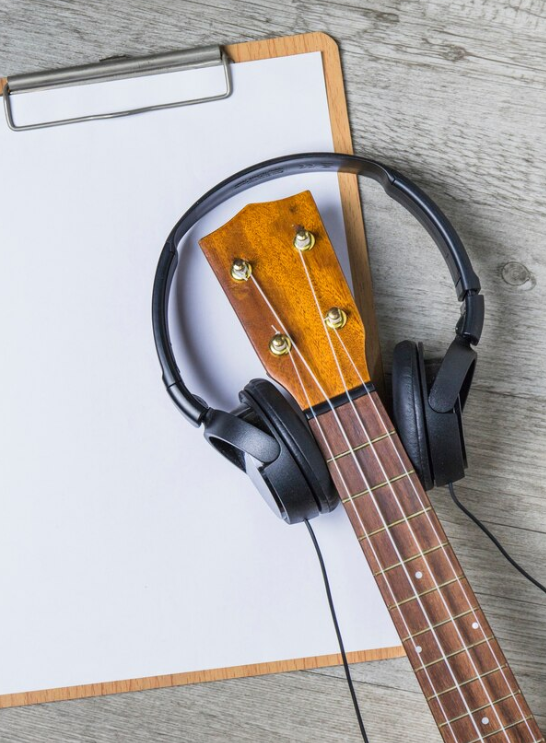

O Que é a Música:

A música é uma manifestação artística que se baseia na organização de sons de maneira harmoniosa, rítmica e melódica. É uma linguagem universal que transcende fronteiras culturais, permitindo a expressão de emoções, ideias e narrativas de forma profundamente impactante. Desde os primórdios da humanidade, a música tem desempenhado um papel central na vida das pessoas, presente em rituais, celebrações, entretenimento e até mesmo no cotidiano. Seja por meio de instrumentos tradicionais ou tecnologias modernas de gravação e produção musical, a música é uma parte intrínseca da experiência humana.
História da Música:

A história da música remonta aos primórdios da civilização, com evidências arqueológicas de instrumentos musicais datando de milhares de anos atrás. Desde então, a música tem desempenhado um papel fundamental nas culturas de todo o mundo, evoluindo ao longo do tempo em resposta a mudanças sociais, tecnológicas e estilísticas.
Ao longo dos séculos, diversas civilizações contribuíram para o desenvolvimento da música, cada uma deixando sua marca única na história. As antigas culturas do Egito, Mesopotâmia e Grécia, por exemplo, desenvolveram sistemas musicais sofisticados e utilizavam a música em cerimônias religiosas, festivais e entretenimento. Na Idade Média, a música desempenhava um papel central na liturgia da igreja católica, influenciando a criação de composições sacras e seculares que ainda são apreciadas hoje.
Importância da Música:

A importância da música na sociedade é multifacetada e abrangente, permeando diferentes aspectos da vida humana. Em primeiro lugar, a música desempenha um papel crucial no desenvolvimento cognitivo e emocional, especialmente em crianças. Estudos mostram que a exposição à música desde tenra idade pode melhorar habilidades como a linguagem, a memória e a coordenação motora, além de promover a criatividade e a autoexpressão.
Impacto da Música na Sociedade:

O impacto da música na sociedade é profundo e multifacetado, influenciando desde as emoções individuais até as dinâmicas sociais em larga escala. Uma das formas mais evidentes desse impacto é a sua capacidade de moldar identidades culturais e fortalecer o senso de pertencimento em comunidades e grupos étnicos. A música é frequentemente associada a tradições locais e regionais, servindo como um meio poderoso para preservar e transmitir a história, os valores e os costumes de uma determinada cultura ao longo do tempo.
Além disso, a música desempenha um papel fundamental na formação de identidades individuais e no desenvolvimento emocional dos seres humanos. Desde a infância, as crianças são expostas à música em diversas formas, o que pode influenciar sua autoestima, criatividade e habilidades cognitivas. Ouvir e criar música também pode servir como uma forma de autoexpressão e terapia, ajudando as pessoas a lidar com emoções complexas, como tristeza, alegria, raiva e amor.